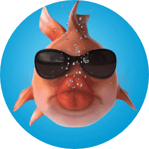

About

I’m Mark, a Senior Analyst / Product Owner helping to make Centrelink easier to navigate.
Outside of work you’ll find me searching for my next new adventure.
That and learning how to develop cool websites and apps!
In my own little world ... I like it here!

I’m Mark, a Senior Analyst / Product Owner helping to make Centrelink easier to navigate.
Outside of work you’ll find me searching for my next new adventure.
That and learning how to develop cool websites and apps!